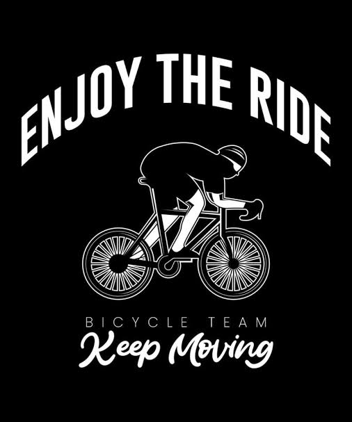
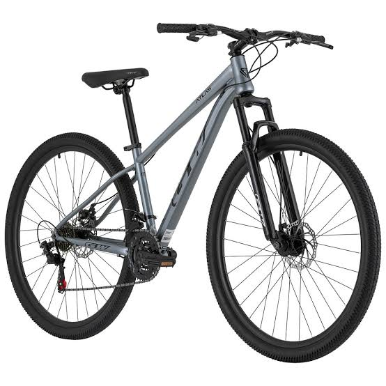
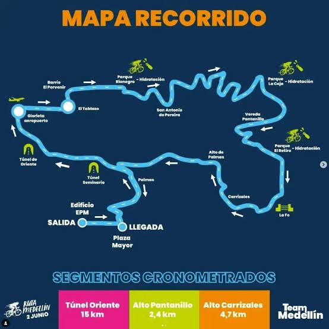

En Rueda Libre queremos que descubras Medellín de una forma diferente. Ofrecemos opciones para recorrer la ciudad, disfrutar sus paisajes y vivir nuevas experiencias sobre ruedas. Encuentra nuestra ubicación aquí.

Alquila una bicicleta para recorrer Medellín a tu propio ritmo. El alquiler incluye casco y candado para que disfrutes tu recorrido con mayor tranquilidad. Ideal para explorar sin afanes.

Conoce lugares interesantes de la ciudad acompañado por un guía. Descubre nuevas rutas y disfruta la experiencia mientras aprendes sobre los lugares que visitas.
Consulta los precios de nuestros recorridosTe ofrecemos ayuda con revisiones y ajustes básicos para que tu bicicleta esté en buenas condiciones antes de salir a rodar. Revisamos aspectos esenciales de su funcionamiento.
Estamos en Medellín, Antioquia. Consulta nuestra ubicación en el mapa y planea tu próxima aventura.
¿Tienes preguntas? Escríbenos por correo.